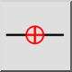

Apriboti horizontaliai
Įrankių juosta / piktograma:


Meniu: Snap > Apriboti horizontaliai
Trumpasis adresas: E, H
Komandos: restricthorizontal | eh
Įrankių juosta / piktograma:


Apriboja žymeklį horizontaliai iki tos pačios Y padėties kaip santykinis nulinis taškas.